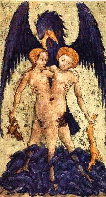

| AURORA
CONSURGENS I
- II
- III - I - II - III - IV - V - VI - VII - VIII - IX - X - XI - XII - XIII - XIV - XV - XVI - XVII - XVIII - XIX - XX - XXI - XXII - XXIII - XXIV - XXV - XXVI - XXVII - XXVIII - XXIX - XXX - XXXI - XXXII - XXXIII - XXXIV - XXXV - XXXVI - XXXVII - XXXVIII - Résumé
:
Il s'agit de 38 aquarelles datant probablement du XVe siècle, articulées de manière relativement lâche autour d'un texte que certains [Marie-Louise von Franz et Carl-Gustav Jung] ont attribué à saint Thomas d'Aquin. Il existe plusieurs versions de ces aquarelles, la plupart appartenant au mss Rhenoviensis 172 de Zurich. D'autres sont extraites du mss Vossiani Chemici F. 29 [Cod. Voss. Chym. F. 29] de Leiden [il s'agit des n° XXXV - XXXVI et XXXVIII]. Bibliographie succincte : - Aurora Consurgens, Marie-Louise von Franz, 1982 [trad. la Fontaine de Pierre] ; - Psychologie et Alchimie, Carl-Gustav Jung, 1971 [trad. Buchet Chastel] ; - Les débuts de l'imagerie alchimique, Barbara Obrist (XIVe - XVe siècles), 1982 [ Le Sycomore]. |
 |
| Pour
obtenir un agrandissement, cliquez sur le numéro de l'image
correspondant à celle du slide show [nous vous conseillons
un
clic droit pour ouvrir l'image dans un autre onglet ; autrement, le
slide - show se réinitialise]. Attention ! Selon votre
débit,
le chargement des images peut prendre 15 à 20 s.
[à 56
bds] et l'image n'apparaîtra qu'après
chargement.
Appuyez sur la touche F11 pour un usage en
plein écran. |